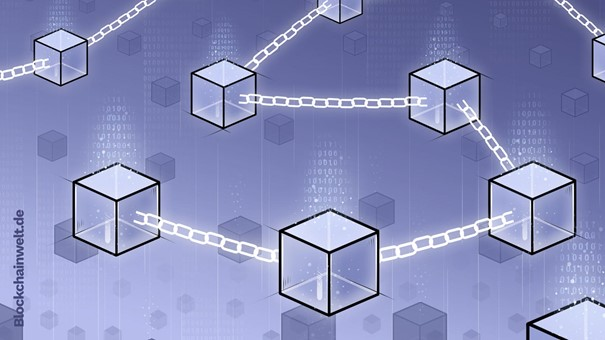

Was ist eine Blockchain?
Das Aufkommen der Blockchain-Technologie reicht in eine Zeit zurück, in der das Internet,
so wie es heute besteht, noch nicht vorhanden war.
Jedoch sagen Experten, dass die Blockchain zu einer der größten Innovationen der digitalen Zeitgeschichte gehört.
Fest steht, dass die Blockchain-Technologie ein wesentlicher Bestandteil der Kryptowährungen ist.
Im Grunde genommen ist eine Blockchain nichts Anderes als eine Zusammensetzung von digitalen Datenblöcken.
In Jedem Block sind Transaktionen zusammengefasst:
Bestellungen, Überweisungen, Wertpapiere.
Manche Vergleichen die Blockchain mit einem Buchhandlung-System.
Das Besondere dieser Daten-Ketten: Sie sind auf einer Vielzahl dezentraler Rechner gespeichert.
Auf jedem Rechner befindet sich dieselbe Datenkette, mit denselben komplexen Informationen.
Es ist nicht möglich einen Datenblock zu verändern, weil sich alle Datenblöcke gegenseitig überwachen.
Der eine Manipulierte würde ausgeschlossen werden, die anderen würden weiterarbeiten.
Daher ist das System transparent, sicher und unveränderbar.

Anonymität
Die Konten einer Blockchain werden anonymisiert, da die Konten dezentralisiert werden. Das bedeutet, dass die Informationen,
über welche eine Bank verfügt, jedem zugänglich gemacht werden.
Trotz dessen ist die Technologie sicher, denn jedes Konto verfügt über eine eigene Adresse, welche aus Zahlen und Buchstaben besteht.
Auf diese Weise kann zwar jeder jedes Konto betrachten und sehen, wie viel Geld auf das Konto überwiesen wird,
wie viel Geld von diesem Konto überwiesen wird
und wie der aktuelle Kontostand aussieht, aber das Konto kann keiner realen Person zugewiesen werden.
Die Verwendung einer Blockchain erfolgt in der Regel anonym.
Hier geht es weiter zum Artikel:
Public-/ und Private Key Verfahren
Einzelnachweise
1.
Blockchain
In: wirtschaftslexikon.gabler.de. Abgerufen am 16.01.2022.